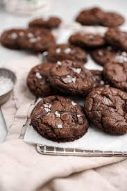

5 Chocolate Cookies

Description
Delicious cookies made with 5 types of chocolate; cocoa in the base, dark, semi-sweet, milk and white chocolate chips.
Ingredients
- 2 1/4 c flour
- 1 tsp salt
- 1 tsp soda
- 1 tsp cayenne pepper
- 1/2 c unsweetened cocoa
- 1 c Crisco
- 1 c sugar
- 1 c brown sugar
- 2 large eggs
- 1 T vanilla
- 1/2 c semi-sweet chocolate chips
- 1/2 c dark chocolate chips
- 1/2 c milk chocolate chips
- 1/2 c white chocolate chips
Steps
- Combine flour, salt, cayenne pepper, cocoa and baking soda; set aside.
- Stir together Crisco, both sugars, eggs and vanilla.
- Gradually add dry ingredients into butter mixture until combined.
- Refrigerate cookie dough overnight.
- Drop dough by tablespoonfuls onto aluminum foil lined baking sheets.
- Bake at 360 degrees for 10 minutes.
Notes
- Makes 3 dozen.
- Try 1.5 tsp baking powder. Bake for 9 minutes.